Francia
Francia
La ruta de Francia: 3 regiones, 12 monumentos. Cada monumento se construye en tres fases.
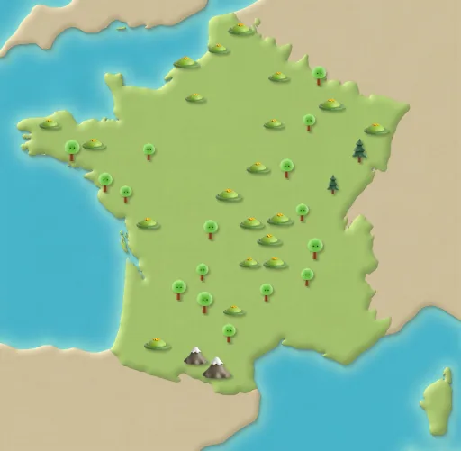
París
Pasos de ruta 1–12
Torre Eiffel
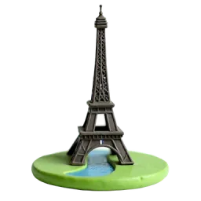
Fase 1 Fase 2 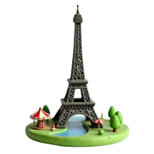
Fase 3 Construida para la Exposición Universal de 1889, la torre tiene el apodo de ‘Dama de Hierro’ por estar hecha de hierro. Fuente: Wikipedia
Arco del Triunfo
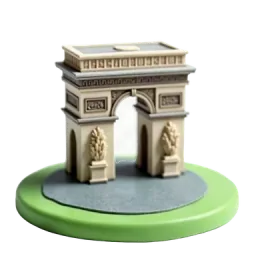
Fase 1 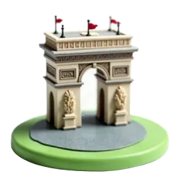
Fase 2 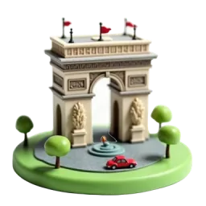
Fase 3 Bajo el arco está la Tumba del Soldado Desconocido, honrada con una llama que nunca se apaga. Fuente: Wikipedia
Notre-Dame
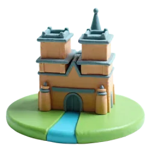
Fase 1 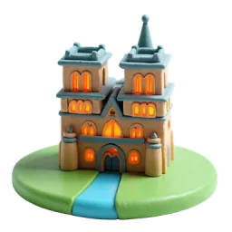
Fase 2 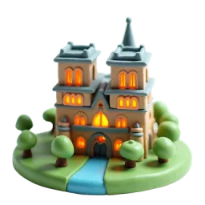
Fase 3 La construcción de la catedral empezó en 1163 y terminó casi del todo en 1260, casi 100 años después. Fuente: Wikipedia
Sacré-Cœur y Montmartre
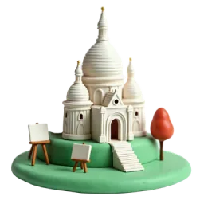
Fase 1 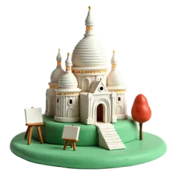
Fase 2 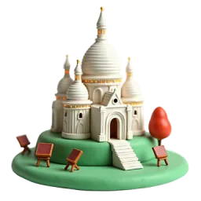
Fase 3 La piedra de la basílica suelta calcita cuando llueve, y eso la mantiene muy blanca. Fuente: Wikipedia
Normandía
Pasos de ruta 13–24
Mont-Saint-Michel
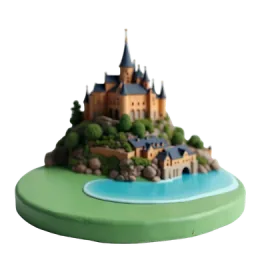
Fase 1 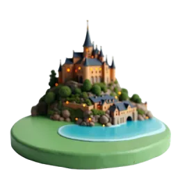
Fase 2 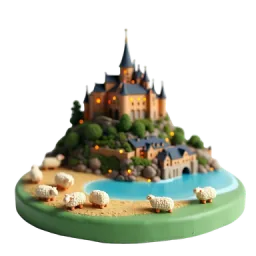
Fase 3 Antiguamente, los peregrinos solo podían llegar a pie a esta isla con la marea baja. Es Patrimonio de la UNESCO desde 1979. Fuente: Wikipedia
Acantilados de Étretat
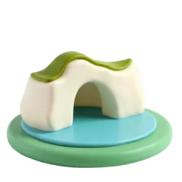
Fase 1 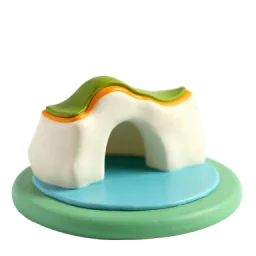
Fase 2 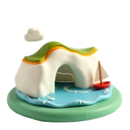
Fase 3 Los acantilados de tiza de Étretat tienen tres arcos naturales y una roca puntiaguda, la Aguja, de 70 metros sobre el mar. Fuente: Wikipedia
Puerto de Honfleur
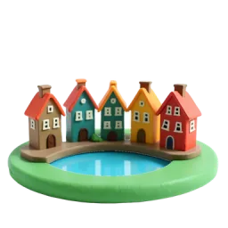
Fase 1 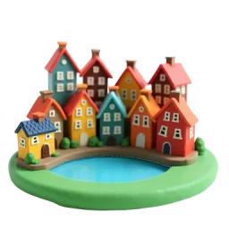
Fase 2 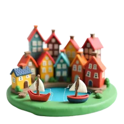
Fase 3 Pintores como Monet y Boudin pintaron a menudo las casas del puerto de Honfleur, y sus encuentros ayudaron a nacer al impresionismo. Fuente: Wikipedia
Jardín de Monet en Giverny
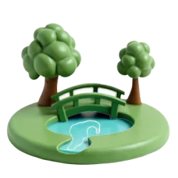
Fase 1 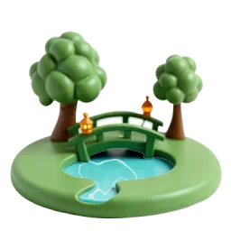
Fase 2 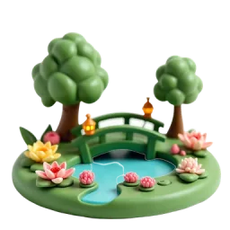
Fase 3 El pintor Monet vio el pueblo de Giverny desde la ventana de un tren y decidió mudarse allí. Fuente: Wikipedia
Valle del Loira
Pasos de ruta 25–36
Castillo de Chambord
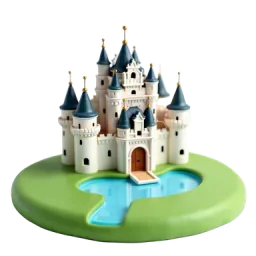
Fase 1 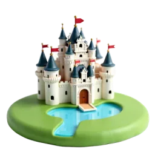
Fase 2 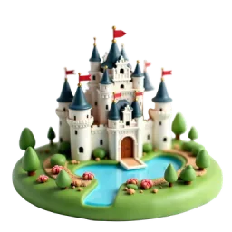
Fase 3 En el centro del castillo hay una escalera de doble espiral: dos escaleras suben tres pisos sin cruzarse nunca. Fuente: Wikipedia
Castillo de Chenonceau
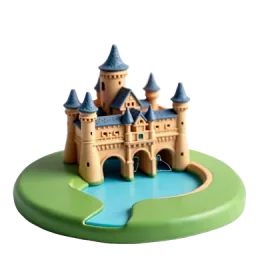
Fase 1 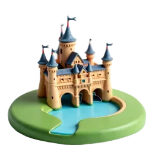
Fase 2 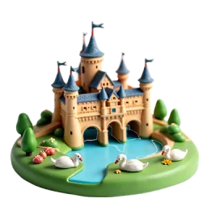
Fase 3 Chenonceau se extiende sobre el río Cher; su larga galería se apoya en un puente sobre el agua. Fuente: Wikipedia
Castillo de Amboise
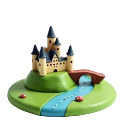
Fase 1 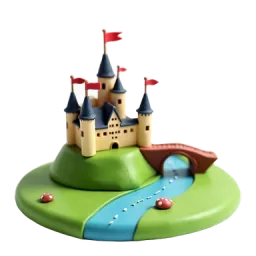
Fase 2 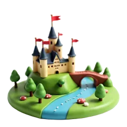
Fase 3 Leonardo da Vinci llegó a Amboise en 1515 como invitado del rey; su casa estaba unida al castillo por un pasadizo subterráneo. Fuente: Wikipedia
Jardines de Villandry
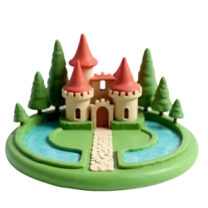
Fase 1 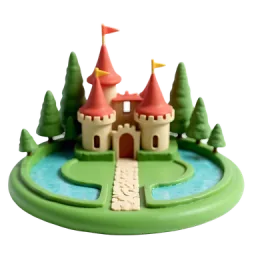
Fase 2 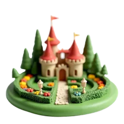
Fase 3 En los jardines renacentistas de Villandry, hasta las verduras crecen en dibujos ordenados entre setos bajos de boj. Fuente: Wikipedia